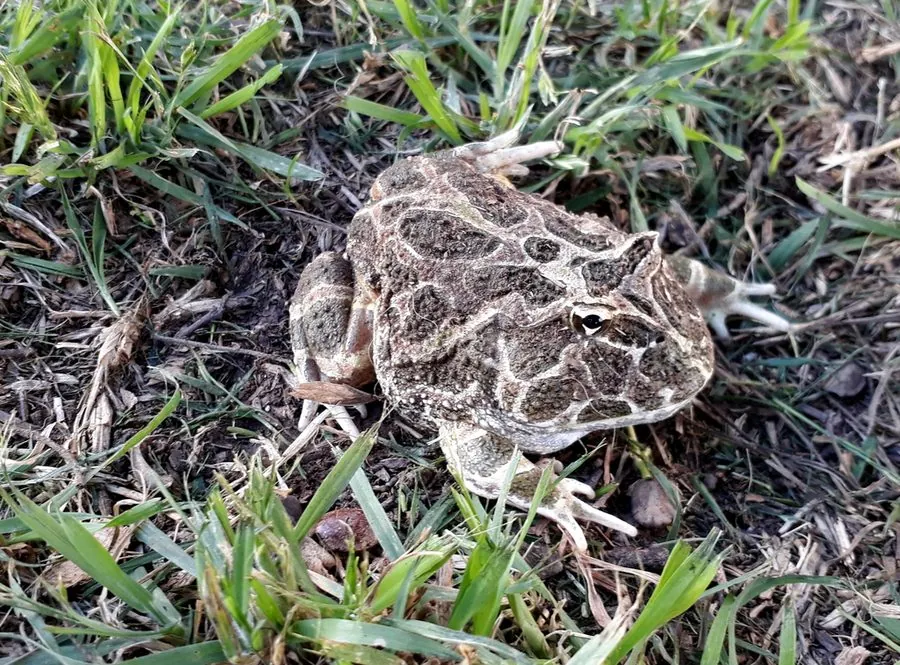

两栖动物 · 动物界
南美角蛙 Ceratophrys cranwelli

南美洲查科地区的大型角蛙，大嘴几乎占身体一半，眼睑上方有尖角，善于埋伏捕食，也是常见的宠物蛙。
- 分类
- 门脊索动物门纲两栖纲目无尾目科角蛙科属角蛙属
- 栖息环境
- 南美洲查科草原、稀树草原及季节性湿地
- 地理分布
- 阿根廷、巴拉圭、玻利维亚和巴西部分地区
- 保护级别
- IUCN 无危（LC）；非中国原产，在中国无保护级别
物种志
南美角蛙体长 8–13 厘米，雌蛙可达 15 厘米，身体矮胖，头部宽大，口裂极宽，几乎占身体的一半；眼睑上方各有一个肉质尖突，像一对小角。体色多为黄绿色、褐色或橙黄色，背部有深浅不一的斑块，皮肤布满小疣。
它原产于南美洲中部的查科草原和季节性湿地，常把身体埋在落叶或泥土中，只露出眼睛，伏击经过的昆虫、其他蛙类、蜥蜴甚至小鼠。雨季来临时迅速繁殖，卵产在临时水洼中，蝌蚪生长很快，部分蝌蚪还会捕食同类。南美角蛙因外形奇特、饲养容易而成为热门宠物，野外种群尚属稳定，但宠物贸易和栖息地开垦仍需关注。
形态与习性
- 食性昆虫、其他蛙类、蜥蜴和小鼠
- 体长约 8–13 cm，雌蛙可达 15 cm
- 繁殖雨季在临时水洼产卵，蝌蚪生长迅速
- 活动节律夜行性，白天埋在落叶或泥土中
- 捕食伏击型，张口吞食经过的猎物
- 寿命约 8–12 年
趣味知识
- 南美角蛙的大嘴几乎占身体一半，能吞下接近自身体型的猎物。
- 它常把身体埋进落叶，只露出眼睛和角状眼睑等待猎物。
- 南美角蛙是宠物市场常见的角蛙，人工繁育个体体色变化很多。